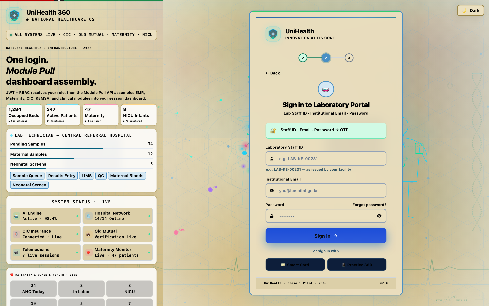
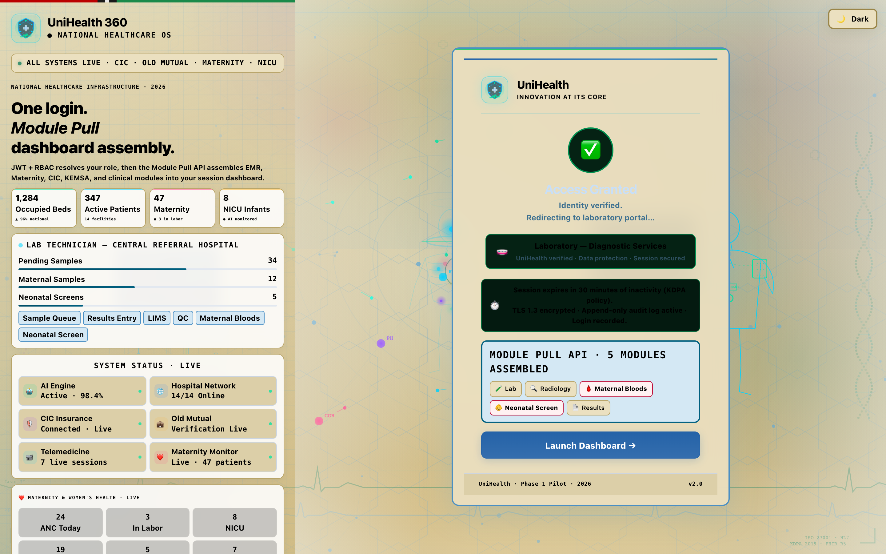
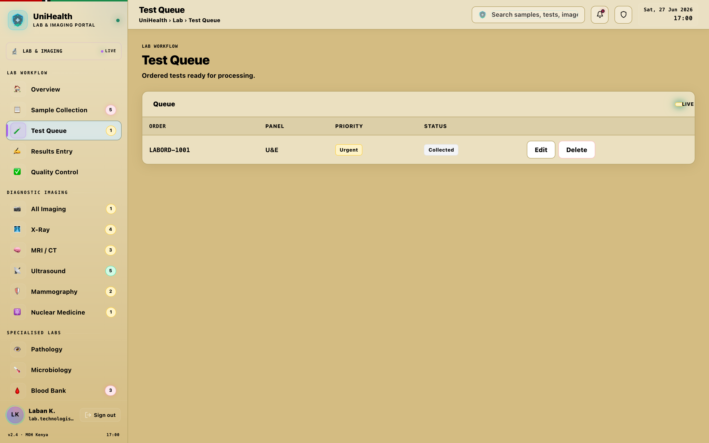
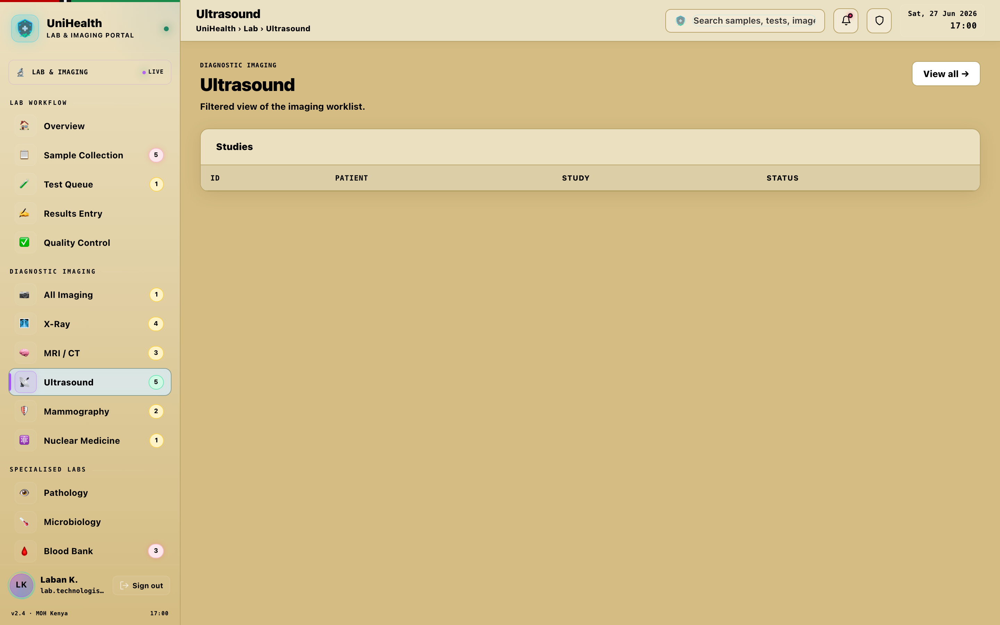
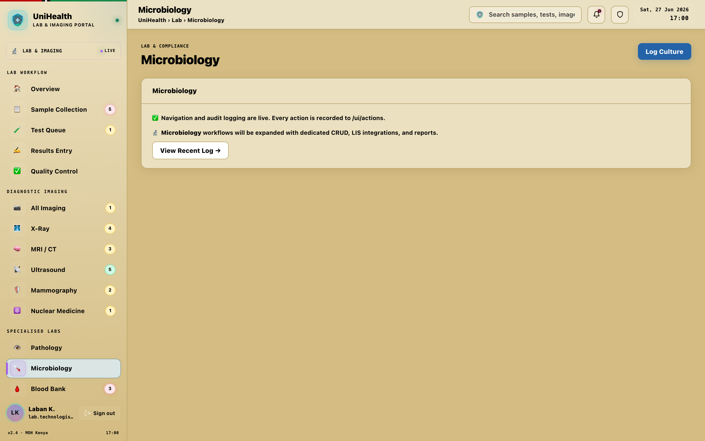
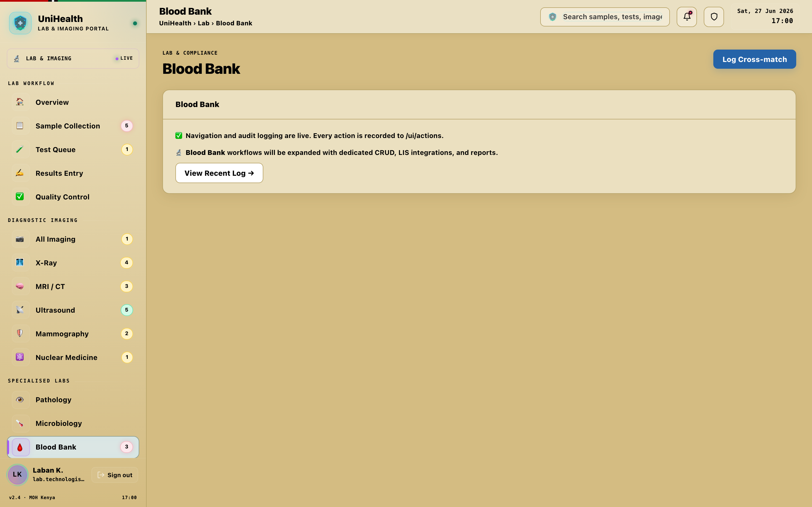
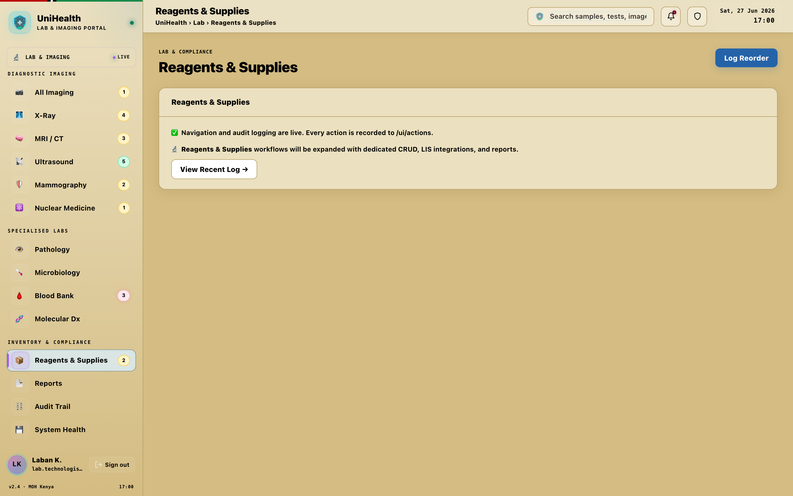
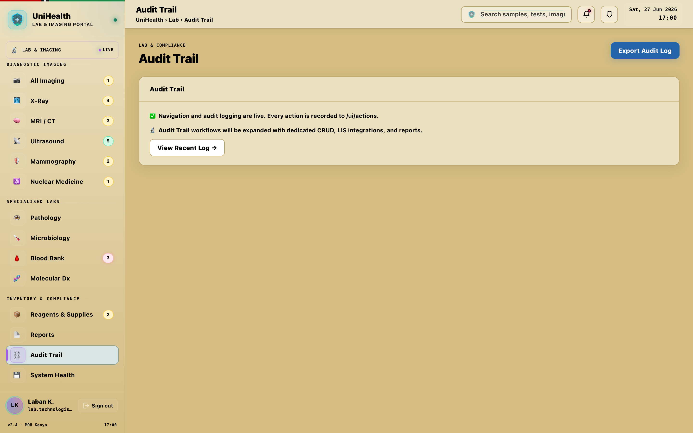

Laboratory Dashboard Manual
Specimen workflow, test queue, imaging modalities, QC, and specialised lab modules.
1. Sign-in — Laboratory
Lab staff sign in with Laboratory Staff ID, email, password, and MFA.
Step 1 — Select role
The Laboratory tile is highlighted in the role carousel. The audit panel logs authentication events for compliance.

The Laboratory tile is highlighted in the role carousel. The audit panel logs authentication events for compliance.
Step 2 — Enter credentials
Enter Laboratory Staff ID (e.g. LAB-KE-00231), email, and password.

Enter Laboratory Staff ID (e.g. LAB-KE-00231), email, and password.
Step 3 — Verify MFA
Enter the six-digit OTP sent to your institutional email. In staging/demo, use Practice 360 or OTP 123456.
Enter the six-digit OTP sent to your institutional email. In staging/demo, use Practice 360 or OTP 123456.
Step 4 — Launch dashboard
Confirms Laboratory — Diagnostic Services. Opens Lab & Imaging portal.

Confirms Laboratory — Diagnostic Services. Opens Lab & Imaging portal.
2. Dashboard layout
The lab dashboard covers core workflow, imaging modalities, specialised labs, and compliance.
| Zone | Purpose |
|---|---|
| Lab Workflow | Collection, test queue, results entry, QC |
| Diagnostic Imaging | X-ray, MRI/CT, ultrasound, mammography, nuclear |
| Specialised Labs | Pathology, microbiology, blood bank, molecular |
| Inventory & Compliance | Reagents, reports, audit, health |
3. Lab workflow tabs
Overview

Daily KPIs: pending collections, queue depth, studies, and QC status.
Sample Collection

Barcode collection workflow and pending draws.
Test Queue

Active orders awaiting processing.
Results Entry

Enter and validate results; triggers critical alerts.
Quality Control

QC runs, Westgard rules, and instrument calibration.
4. Diagnostic imaging tabs
All Imaging

Combined imaging worklist across modalities.
X-Ray

Radiography orders and reporting queue.
MRI / CT

Cross-sectional imaging schedule and results.
Ultrasound

Sonography studies and worksheets.
Mammography

Screening and diagnostic mammography queue.
Nuclear Medicine

PET/SPECT and nuclear medicine orders.
5. Specialised & compliance tabs
Pathology

Histopathology and cytology workflows.
Microbiology

Culture, sensitivity, and infection reporting.
Blood Bank

Cross-match, issue, and inventory.
Molecular Dx

PCR and molecular diagnostic panels.
Reagents & Supplies

Stock levels and reorder alerts.
Reports

Turnaround, workload, and regulatory reports.
Audit Trail

Specimen and result audit history.
System Health

LIS connectivity and gateway status.
6. Tips & troubleshooting
Recommended workflow
- Check Overview KPIs at shift start.
- Process Sample Collection then Test Queue.
- Enter Results with QC verification.
- Route critical values to ordering clinicians.
Common issues
| Issue | Action |
|---|---|
| Order not in queue | Verify doctor order reached gateway; refresh polling |
| QC fail | Hold instrument; repeat controls per SOP |
| Imaging study missing | Check referring clinician order in imaging tab |